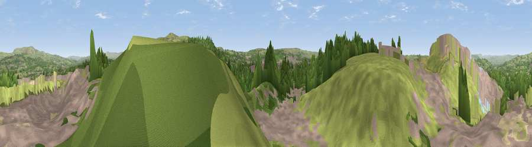

Viewpoint near Huncoat
#18882 in England · top 41% of its area beats it · near HuncoatWhere it is
The exact computed spot (SD 76175 30475). Click the marker for map links.
The view, rendered

A 360° render of this exact spot computed from the terrain model, tree cover and land cover — summer colours, afternoon light, calibrated against photographs of famous viewpoints. Real trees, hedges and buildings will differ in detail.
The panorama
Grey silhouette: terrain skyline in each direction (720 bearings, Earth curvature and refraction included). Dashed green: skyline with trees (+15 m) and buildings (+8 m) as obstacles. Blue strip: how far the ground is visible on each bearing.
Where the view opens
Wedge length = distance to the farthest visible ground on that bearing (vegetation-aware). Rings at 10, 25 and 50 km.
What fills the view
40% grassland · 33% built-up · 26% woodland · 1% bare ground
Angular shares of the visible panorama (visual magnitude), not map area. Landscape diversity 0.50 (0–1 Shannon).
Key numbers
More beautiful places nearby
The staircase of upgrades: each row has a higher view potential than everything closer. Driving times are estimates from straight-line distance, calibrated against real road routing — check an actual route before setting out.
| Place | Direction | Drive | Score |
|---|---|---|---|
| Viewpoint near Clayton-le-Moors | WNW · 0 km | ~1 min | 60.4 |
| Viewpoint near Huncoat | SE · 2 km | ~6 min | 70.6 |
| Great Hameldon | ESE · 4 km | ~8 min | 74.2 |
| Viewpoint near Tockholes | SW · 12 km | ~22 min | 74.7 |
| Pendle Hill | NNE · 12 km | ~22 min | 76.5 |
| Darwen Hill | SW · 12 km | ~23 min | 80.7 |
| Rivington Pike | SW · 21 km | ~35 min | 81.9 |
| White Brow | SSW · 21 km | ~35 min | 82.9 |
53.77007, -2.36295 · source: screening · position refined by local search. Computed location — check access rights before visiting.